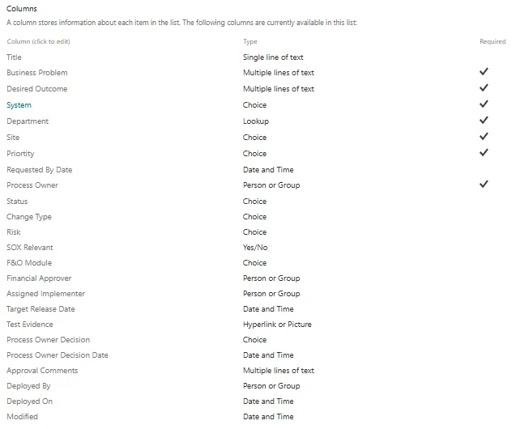
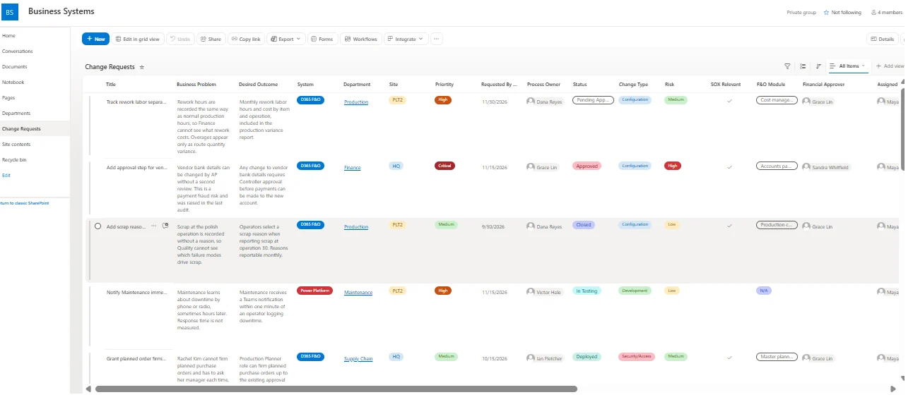
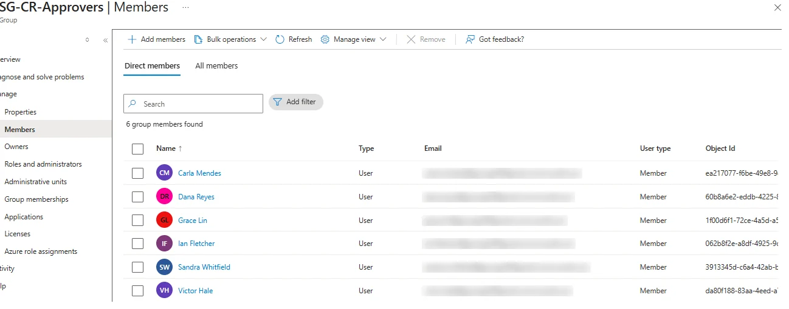
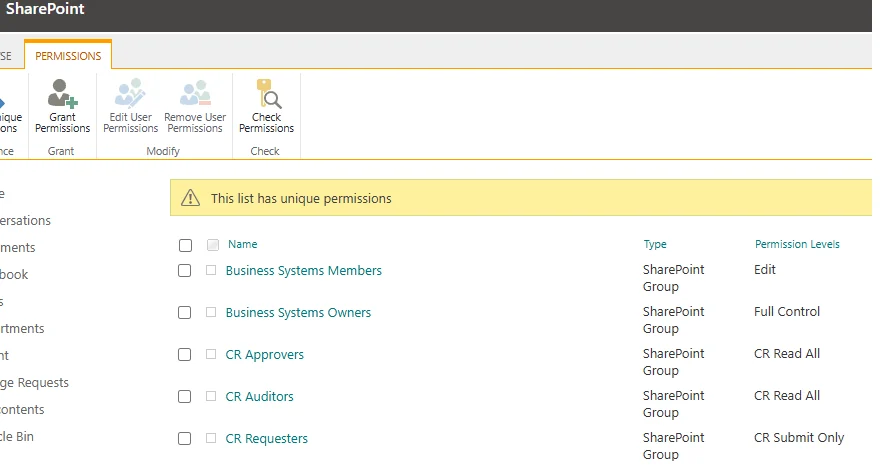
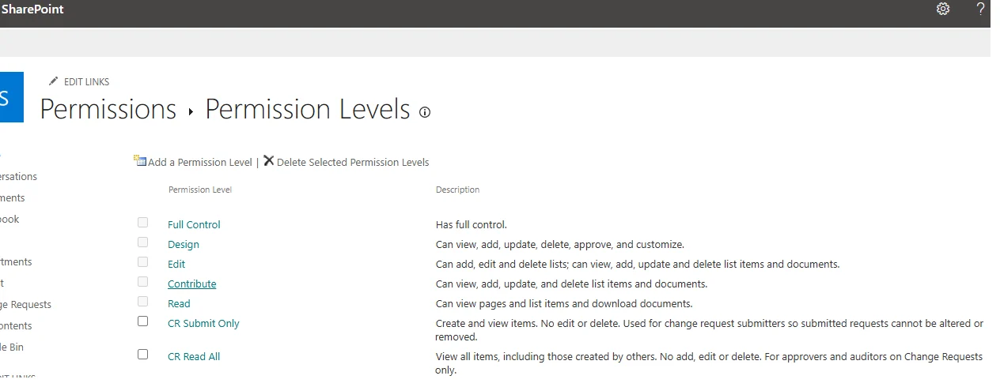
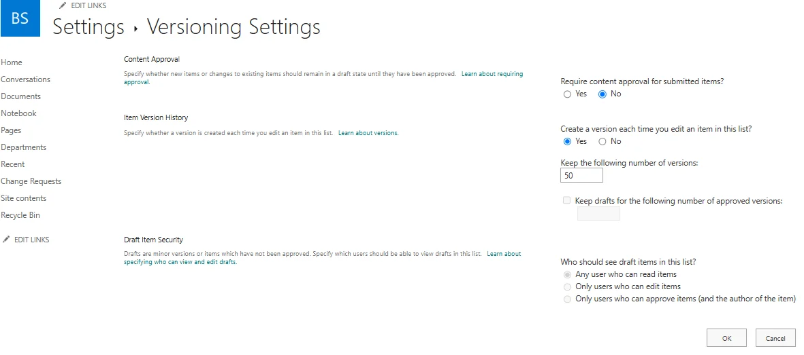
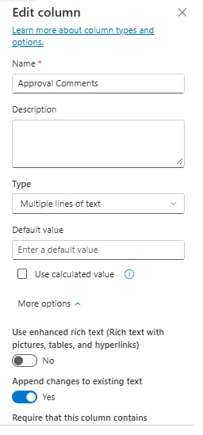
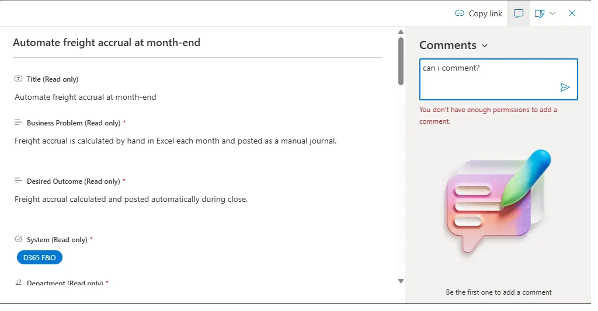
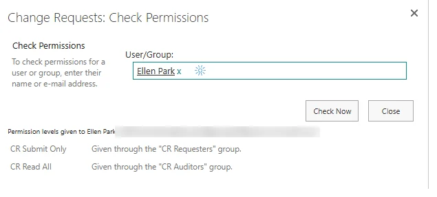

SharePoint administration · SOX change control · Lumen Photonics lab
Approach highlighted
Designing least-privilege permissions that enforce a SOX control, then proving the design works by testing it as each role rather than as the administrator.
Project Summary
A change request intake for a manufacturing company's Business Systems Team, built on SharePoint in a Microsoft 365 test tenant. Employees submit requests for changes to D365 Finance & Operations, Power Platform and SharePoint. Approvers and auditors can see every request, requesters see only their own, and no one outside Business Systems can change a request after it is submitted. The company, Lumen Photonics, is fictional and modeled on a fiber laser manufacturer.
Business Problem
Change requests arrived by email and hallway conversation and were logged by hand in an Excel tracker. The company is public, so any change that affects inventory valuation or cost of goods sold is in SOX scope, and external auditors sample change records every year. The tracker could not show who approved a change, could not stop a request from being edited after approval, and gave everyone the same access to everything.
Starting From Requirements, Not the Requested Solution
The design started from a real-style ticket: a production manager asked for a new "Rework" cost category before month-end. Working through it the way an analyst would (stakeholders, current state, constraints such as the close freeze, and what was out of scope) produced the list of fields the intake needed and the controls it had to enforce: two named approvers for costing changes, no approval by timeout, and a record auditors can trust.
Designing the List Around Who Owns Each Field
The Change Requests list has 26 columns in three groups: what the requester describes (the business problem, not the solution they want), what Business Systems classifies (change type, SOX relevance, risk, implementer), and what the approval flow will record (decisions and timestamps). People never type a decision into the list, so the decision columns are evidence rather than opinion.


Groups, Not People
Access is granted to groups only. Entra ID security groups hold the people, SharePoint groups map those groups to permission levels, and the list's unique permissions use the SharePoint groups. When an approver leaves, one Entra group membership changes and every site, list and flow that uses it updates at once.
| On the Change Requests list | Contains | Permission level |
|---|---|---|
| Business Systems Owners | Microsoft 365 group owners | Full Control |
| Business Systems Members | Analyst and developer | Edit |
| CR Requesters | SG-All-Employees | CR Submit Only (custom) |
| CR Approvers | SG-CR-Approvers | CR Read All (custom) |
| CR Auditors | SG-Internal-Audit | CR Read All (custom) |


Two Custom Permission Levels
CR Submit Only is Contribute without Edit Items, Delete Items or Delete Versions. SharePoint has no column-level security, so if a requester could edit their request they could also edit its decision columns, or change the scope after it was approved. Requesters add information through a separate linked list instead, and a scope change resets the approvals. Deleting is removed because deleting a request would delete the audit evidence; unwanted requests are cancelled instead.
CR Read All is Read plus Override List Behaviors, the permission that lets approvers and auditors see items created by other people without granting edit rights. Because the same permission can also discard other users' document checkouts, it is granted on this one list and never on the site.

Evidence by Default
Version history is on for every item, and the Approval Comments column only appends, so each comment is kept with its author and time. Combined with the built-in Created, Modified and Modified By columns, the list records who changed what and when without anyone having to remember to document it.


Testing as the Roles
Every permission was tested by signing in as the test users, because an administrator with Full Control can't see what's broken for anyone else.


What Testing Found
Four problems only showed up when testing as real roles, and each one is a lesson worth keeping:
Design Decisions Worth Defending
What's Next
Locking down the new-request form so requesters only see their own fields, a linked Request Updates list, and the Power Automate approval flow: process owner first, then the Controller when SOX Relevant is Yes, with escalation and decisions written back to the list.
Skills Demonstrated
Requirements gathering, SharePoint list design, permission inheritance, custom permission levels, item-level security, Entra ID security groups, SharePoint groups, segregation of duties, SOX change control, versioning and audit trail design, and role-based permission testing.
More from this SharePoint lab